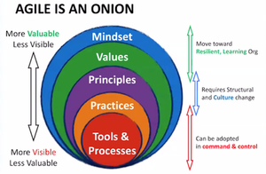
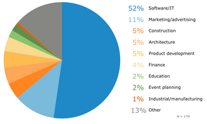

Agile: True or False
Originally published at https://justiceconder.medium.com/agile-true-or-false-8a5b0528235a

In this episode of The Modern Agilist, we played a little game called true or false. In it, we made a statement and challenged the other two participants to state whether it was true or false and the reasons behind it that answer. What made this particular approach more interesting is that it highlighted the ways in which a statement could be true or false and subtle distinctions that could influence that answer. Agility isn’t about rote textbook answers but requires one to think on their toes built up from first principles and values. This distinction is best illustrated by something called the Agile Onion:

(First envisioned by Simon Powers)
As can be seen from the above illustration, there is the possibility to have well-known agile practices without the supporting values and mindset which leave room for “doing agile” but not “being agile”. We try to unpack several questions along these lines with playful and teachable attitudes in the show.
Agile Requires Less Planning
False! Agile requires a different kind of planning. This is a trickster of a question for sure because waterfall has customarily been characterized as planning heavy so it would stand to reason that agile, in contrast, requires less planning. This train of logic however fails to incorporate the idea of iterative delivery and the way in which the planning that does take place takes place largely over a smaller deliverable. Agile is effective, not necessarily efficient.
Agile Eliminates Documentation
False! Agile transforms documentation. Similar to the previous question, this statement hinges on one’s understanding of documentation. While it is true that the traditional (waterfall) documentation of comprehensive upfront is not advised it hasn’t been eliminated. It has been superseded by more functional documentation in the form of User Stories and more dynamic documentation in the form of self-documenting production code.
Kanban Doesn’t Predict Release Dates
False! The statistical methods employed by Kanban can provide better release predictions than even traditional estimates can. Some of the biggest myths in agile revolve around kanban and one of the biggest is there are no due dates or predictions with pure kanban. The opposite couldn’t be more true. Rather than having sprint goals, kanban has a goal via a service-level expectation, or cycle time, for every single issue that enters a team’s workflow. These cycle times can, in fact, be used to more accurately predict when work will be done than even traditional estimates using Monte Carlo simulations.
Agile is Only for Software Development
False! Agile is useful for any complex, adaptive, or creative work. While it is true that agile is most publicly used with software development, it is not exclusively useful for software. Agile is and has been used across wildly diverse disciplines such as marketing, HR, finance, and communications, etc. Basically, any form of value delivery in dynamic environments lends itself to agile methods as it provides a framework for delivering value early and often while accounting for changing priorities.

Release Checklists are Essential
False! This may be a carry-over from a previous era of big-bang release management. The idea that releasing work into production is a huge event that must be approved by a committee or senior representatives is outdated. These ideas are vestiges of the old world. Teams should be endued with all the expertise and authority to release as work is complete. This is the philosophy behind the technological innovations of continuous integration and continuous delivery. Amazon and other top tear technology leaders deploy to production every few seconds.
Developers Meet Throughout The Day to Replan the Sprint
False! The sprint is planned in the beginning. True. Teams certainly talk throughout the day as needed to meet the goal of the sprint. This may have been the most tricky of questions and one that captures the fact that things are always nuanced. This question also highlights the purpose of the daily scrum to address blockers and the need to protect the time of the team.
Agile Means Faster
You may decide for yourself if you think this statement qualifies as a true or false statement but we all came to the conclusion that it’s false at face value. What is true is that Agile produces some of the right value sooner.
- Some: Better to have some value now, rather than just all of it later.
- Right: Getting the wrong thing sooner provides no value.
- Sooner: Earlier value means it can be validated and that it can inform what is delivered after.
Conclusion
These were just some of the questions we talked through and, sometimes, debated. We also discussed whether agile is process-for-process-sake, maximum team sizes, and many other interesting topics.
Are you a Scrum Master or Agilist or someone just interested in learning more about the craft? Jump into the conversation and post your thoughts on one of our social media outlets. Rick, Mike, and I believe that this space is one of the most exciting and promising in today’s world of IT or project management. We are mastering largescale software delivery and addressing the greatest efficiency blocker in the history of man, namely broken coordination, and firmly believe that this skill set will be one of the most in-demand in years to come.
Listen to the show here or follow us on Linkedin or Twitter.
20
20